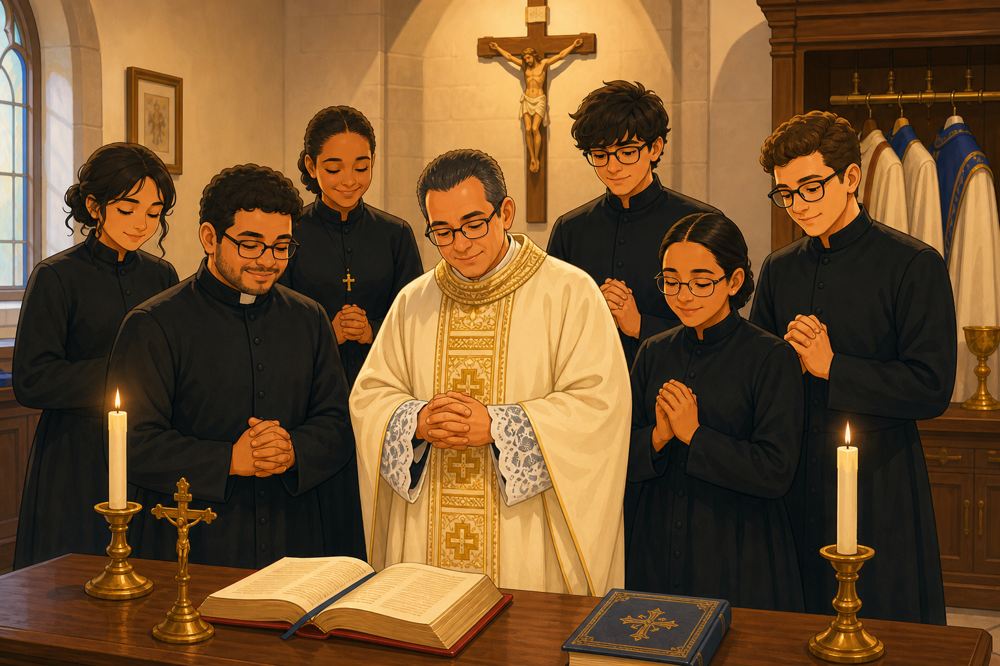
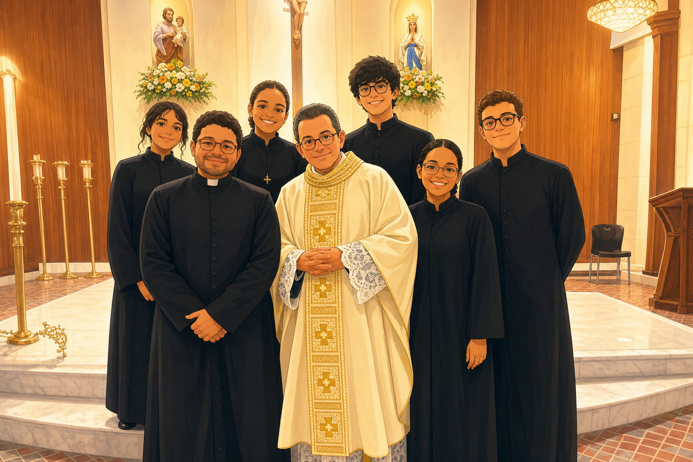
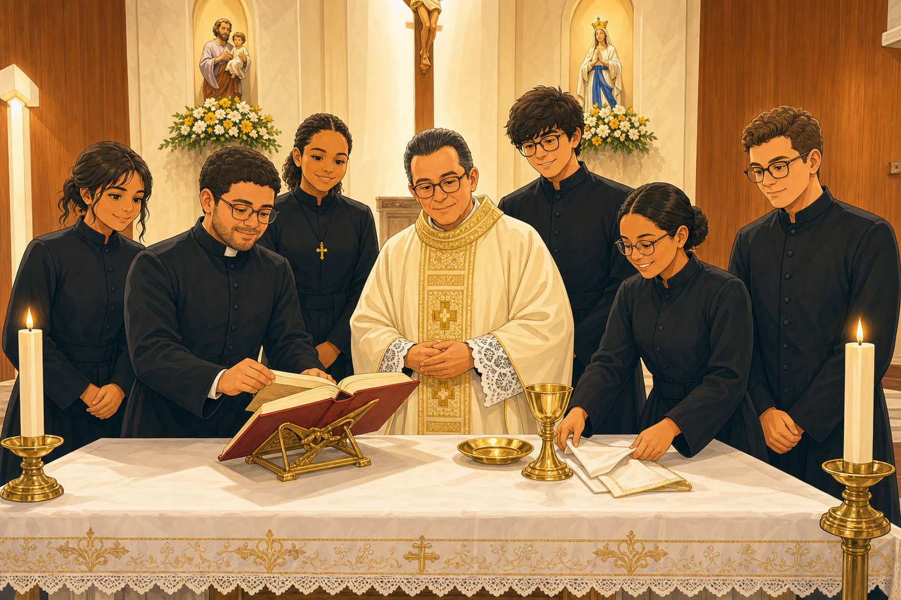
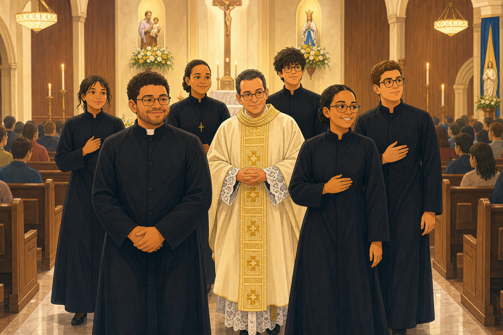
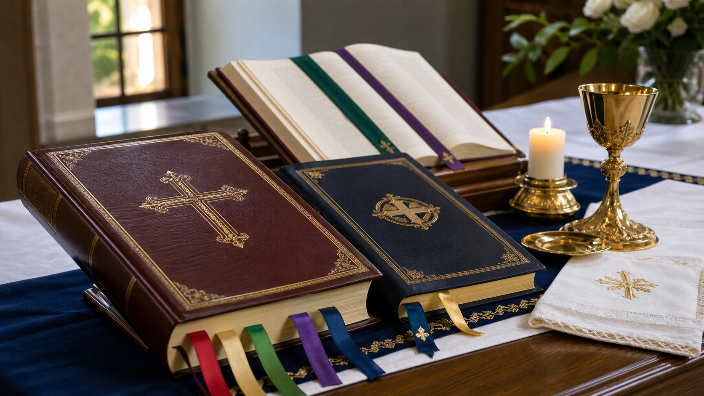

Antes de servir
Rezar para servir melhor
O primeiro movimento do cerimoniário é interior: colocar o coração diante de Deus antes de organizar a celebração.

Formação católica para servir melhor a liturgia
Um guia organizado para entender a missão do cerimoniário, preparar a missa com reverência, orientar ministros com caridade e rezar antes de servir.
As ilustrações foram feitas em estilo animação a partir da foto dos mestres de cerimônia e do padre. Elas ajudam a explicar, com exemplos visuais, a postura que se espera antes, durante e depois da missa.

O primeiro movimento do cerimoniário é interior: colocar o coração diante de Deus antes de organizar a celebração.

Missal, cálice, patena, velas, microfones e lugares devem estar prontos para evitar improvisos durante a missa.

Procissões, reverências e deslocamentos devem ser firmes, simples e discretos, conduzindo a assembleia à oração.

A IGMR e a Sacrosanctum Concilium recordam que a liturgia deve ser preparada com fidelidade, formação e espírito de fé.
O mestre de cerimônia, também chamado de cerimoniário, é o ministro que ajuda a preparar, coordenar e acompanhar a celebração litúrgica. Ele zela para que os ministros saibam suas funções, para que os objetos estejam prontos, para que os movimentos aconteçam com calma e para que a missa seja celebrada com dignidade.
A principal função do mestre de cerimônia é zelar para que a celebração litúrgica aconteça com ordem, reverência e fidelidade ao rito da Igreja.
Vocês foram escolhidos porque alguém viu sinais de responsabilidade, atenção, compromisso, amor pela missa, disponibilidade, postura, maturidade e capacidade de ajudar outras pessoas a servirem melhor.
Vocês não foram escolhidos porque são melhores que os outros. Foram escolhidos porque a Igreja confia a vocês uma responsabilidade maior.
Quanto maior a responsabilidade, maior deve ser a humildade. O altar não é palco; a liturgia não é apresentação; o serviço não é lugar de disputa.
A formação do cerimoniário precisa nascer dos documentos da Igreja. Não basta aprender por costume; é preciso entender o espírito da liturgia e obedecer ao rito.
A IGMR apresenta o mestre de cerimônia como um ministro competente que cuida da preparação das ações sagradas e de sua realização com decoro, ordem e devoção. Essas três palavras são um programa de vida para o cerimoniário.
A IGMR também orienta sobre partes da missa, movimentos, posturas, silêncio, procissões, preparação do altar, uso dos livros litúrgicos, reverências, incenso, lugares do presbitério e objetos necessários.
A Sacrosanctum Concilium ensina que a liturgia é ação de Cristo e da Igreja, fonte e ponto alto da vida cristã. Por isso, ninguém deve acrescentar, retirar ou mudar elementos litúrgicos por iniciativa própria.
A função do mestre de cerimônia é prática, mas não é apenas prática. Sem oração, ele se torna somente um organizador de movimentos. A liturgia pede técnica, mas também pede alma.
Não existe, no rito romano, uma oração privada universal obrigatória que todo mestre de cerimônia tenha que fazer antes de cada missa. O que é obrigatório é participar e servir conforme o rito da Igreja, com fé, respeito e fidelidade.
Mesmo assim, é muito recomendado que o cerimoniário reze antes e depois de servir. Essa oração não deve atrasar a celebração nem chamar atenção. Ela serve para colocar o coração no lugar certo.
| Tipo | Como entender |
|---|---|
| Obrigatório | O que pertence ao rito e às normas da Igreja: gestos, respostas, funções, silêncio, objetos e momentos previstos. |
| Recomendado | Oração pessoal, exame de consciência, estudo, preparação espiritual e conversa fraterna com a equipe. |
| Costume local | Práticas da paróquia ou diocese, desde que estejam de acordo com a liturgia e sejam aprovadas pelo padre responsável. |
Não é necessário rezar uma frase falada a cada reverência. Muitas vezes, o próprio gesto já é oração. A genuflexão diante do Santíssimo expressa adoração; a inclinação diante do altar expressa honra e reverência.
Pode-se, porém, unir o gesto a uma oração interior breve, sem mover os lábios de forma chamativa e sem atrasar o rito.
As orações abaixo são sugestões para a vida espiritual do cerimoniário. Elas não substituem as orações da missa e devem ser rezadas antes ou depois da celebração, ou interiormente, com discrição.
Senhor Jesus, hoje eu vou servir no vosso altar. Preparai meu coração antes que eu prepare qualquer objeto. Dai-me humildade para obedecer, atenção para perceber, calma para agir e amor para servir. Que eu não busque aparecer, mas ajude a vossa Igreja a rezar melhor. Amém.
Senhor, colocai ordem no meu coração. Que minhas mãos sirvam com respeito, meus olhos estejam atentos, meus passos sejam discretos e minhas palavras sejam poucas e necessárias. Que tudo nesta celebração conduza a vós. Amém.
Jesus, verdadeiro centro da Santa Missa, nós nos colocamos a serviço da vossa Igreja. Ajudai-nos a servir com unidade, silêncio, alegria e reverência. Livrai-nos da vaidade, da distração e da pressa. Que a nossa presença ajude a comunidade a rezar. Amém.
Jesus Eucarístico, eu vos adoro. Ensinai-me a reconhecer a vossa presença e a servir com fé. Que cada gesto meu seja sinal de respeito, e que meu coração permaneça unido a vós durante toda a celebração. Amém.
Senhor, dai-me calma. Que eu faça o necessário com simplicidade. Se algo sair diferente do planejado, ajudai-me a agir com prudência, sem desespero e sem chamar atenção. Eu confio em vós. Amém.
Senhor, colocai caridade nas minhas palavras. Que eu corrija para ajudar, não para humilhar. Que eu saiba ensinar com paciência e aprender com humildade. Amém.
Obrigado, Senhor, por me permitirdes servir. Perdoai minhas falhas, minhas distrações e minhas impaciências. Recebei o pouco que fiz e transformai em serviço para a vossa Igreja. Ajudai-me a servir melhor na próxima celebração. Amém.
O corpo também reza. Por isso, os movimentos do cerimoniário devem ser simples, firmes, discretos e cheios de sentido.
A genuflexão é feita dobrando o joelho direito até o chão e significa adoração. É feita diante do Santíssimo Sacramento. Se o sacrário está no presbitério, os ministros fazem genuflexão ao se aproximarem do altar no início e ao se retirarem no final, mas não ficam repetindo genuflexões durante a própria missa.
A inclinação expressa reverência e honra. A inclinação profunda é feita diante do altar quando se chega a ele e quando se parte, conforme o rito. Quem carrega cruz processional, velas, Evangeliário ou outro objeto faz inclinação de cabeça, não genuflexão.
O silêncio não é vazio. Ele ajuda a assembleia a rezar, escutar e adorar. O mestre de cerimônia deve proteger o silêncio, especialmente antes da missa, depois das leituras, depois da homilia, durante a Oração Eucarística e depois da comunhão.
O incenso é sinal de oração, honra e reverência. Quando usado, o cerimoniário deve combinar antes quem será turiferário, quem levará a naveta, quando o sacerdote colocará incenso, onde os ministros ficarão e como entrarão sem atrapalhar o rito.
O bom serviço começa antes da celebração. O mestre de cerimônia que chega tarde já começa tentando consertar o que poderia ter sido preparado com serenidade.
Durante a celebração, o cerimoniário acompanha o rito com atenção serena. Ele deve estar sempre um passo à frente, prevendo o que virá, mas sem chamar atenção para si.
A procissão deve expressar ordem e recolhimento. O cerimoniário verifica a ordem dos ministros, a distância entre eles, o ritmo dos passos e o momento de iniciar.
Acompanhar Missal, microfone, coroinhas e postura geral. Se houver aspersão, tudo deve estar preparado antes.
Durante as leituras, o cerimoniário também escuta. Ele não deve andar sem necessidade. A Palavra de Deus pede atenção.
Coordenar a preparação do altar: corporal, cálice, patena, âmbulas, galhetas, lavabo e incenso, quando usado. Tudo deve ser feito com calma, sem atravessar o altar de qualquer modo.
Saber antes como a comunhão será distribuída, onde ficarão sacerdote, diácono e ministros, como os fiéis se aproximarão e como os vasos sagrados retornarão.
Preparar a saída com simplicidade. Não desmontar o presbitério antes da bênção final e não iniciar conversas antes da procissão terminar.
A missa termina, mas o serviço ainda não acabou. O mestre de cerimônia ajuda a guardar os objetos com respeito e a avaliar o que precisa melhorar.
Erros devem ser corrigidos, mas o modo da correção importa muito. Nunca humilhe alguém na frente dos outros. Se o erro pode esperar, corrija depois, com calma e caridade.
| Situação | Atitude |
|---|---|
| Erro pequeno | Corrigir depois, com objetividade. |
| Erro repetido | Formar a pessoa e acompanhar na próxima celebração. |
| Erro durante a missa | Intervir somente se for necessário. |
| Dúvida sobre norma | Consultar o Missal, o padre ou a coordenação de liturgia. |
| Conflito de equipe | Conversar com caridade, sem fofoca e sem disputa. |
Este roteiro pode ser usado em cinco encontros. Cada encontro deve ter uma parte de explicação, uma parte prática e um pequeno momento de oração.
| Encontro | Tema | Prática |
|---|---|---|
| 1 | Identidade, missão e humildade | Partilha sobre por que foram escolhidos e oração da equipe. |
| 2 | Espiritualidade e postura | Treinar silêncio, caminhada, inclinação, genuflexão e comportamento na sacristia. |
| 3 | Objetos, livros e lugares litúrgicos | Montar uma credência completa e identificar cada objeto. |
| 4 | Roteiro da missa parte por parte | Simular entrada, Palavra, ofertório, comunhão e saída. |
| 5 | Missa solene e imprevistos | Treinar incenso, velas, Evangeliário, procissões e respostas a imprevistos. |
Uma folha simples para os cerimoniários guardarem e revisitarem sempre.
Este site é um material pastoral de formação. Para estudo oficial, consulte os documentos litúrgicos da Igreja e as orientações da sua diocese.
referência oficial da Santa Sé em inglês; no Brasil, consulte também a tradução aprovada no Missal Romano usado pela Igreja no país.
Abrir documentoConstituição do Concílio Vaticano II sobre a Sagrada Liturgia, em português no site da Santa Sé.
Abrir documento